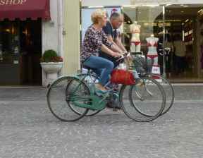
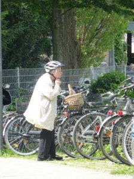

In the UK, the drive to boost cycling numbers is an important part of the policy agenda. There are lots of reasons for this, including moves to encourage people to use more sustainable modes of transport, and concerns about rising levels of obesity. Moreover, as the population ages, there is growing pressure upon public services, including health and social care. Engaging in regular gentle exercise, such as riding a bike to the local shops, can help to prolong good health and increase social and mental wellbeing; potentially delivering significant savings for the public purse.
One of the cycle BOOM team’s tasks has been to try and understand what kind of policy measures might help to support increased levels of cycling among older adults. The first thing to say is that, despite the many benefits known to be associated with cycling, older adults are rarely part of the conversation about cycling in the UK. The reasons for this are complex, but are likely to be at least partly due to a pre-conception that older adults are not physically capable of cycling. Our research with older cyclists suggests that this view is misplaced. Many older adults continue to cycle well into their 70s and 80s using a range of strategies to ensure that cycling remains both a viable and enjoyable activity.
We are conducting a review of health, transport, built environment and wellbeing policy to identify areas of potential intervention to help support cycling for all ages. Although there is a long way to go, we think there are some grounds for optimism. Global agendas such as the Liveable Cities movement, which aims to transform cities to deliver societal wellbeing, are gaining ground. In 2010, the UK Prime Minister David Cameron said that improving our society’s sense of wellbeing was “the central political challenge of our times“.
Government Departments seem to have taken up this call. For example, the Department for Health’s (2014) publication ‘Wellbeing and Why it Matter’s to Health’ highlights the close link between health and levels of wellbeing. Research suggests that older adults reporting high levels of subjective wellbeing (a measure of how they think and feel about their own wellbeing, including life satisfaction, positive emotions and whether their life is meaningful) are more likely to be active, healthy, independent and socially connected (ibid). This can add years to life with those with high levels of wellbeing living between 4 to 10 years longer than those reporting lower levels of wellbeing (ibid).
Whilst the drive to achieve greater societal wellbeing is to be welcomed, and something that is increasingly visible across a range of policy areas including health, planning and transport, these fields often operate in siloes. For example, while in transport planning we are seeing some good progress in the delivery of more cycle-friendly infrastructure, measures are often based on a selective view of who the ‘typical’ cyclist is and what their capabilities are (see previous blog post). For instance, some older adults, who may otherwise be very confident cyclists, can find turning right at junctions challenging; failing to acknowledge this and take adequate steps in planning road infrastructure may discourage older adults from continuing to cycle. It may also dissuade others from either taking up or re-engaging in cycling.
Our policy review will help to paint a broad picture of activity across policy fields and indicate areas where shared working may be possible. We hope it will help to prepare the ground for policy makers working in different fields to better understand the needs of older cyclists and recognise the potential that cycling can play in achieving a range of policy goals including healthier ageing. We will also use the review to ensure that our research findings engage with, and potentially inform, influence and impact, UK policy.
The policy review will be published on the cycle BOOM website in early 2016. As part of the review we are keen to capture local level activity that supports cycling among older adults. This could include (for example) social cycling groups aimed at older adults, training programmes designed to encourage cycling among all ages and abilities, or examples of good practice in transport planning and engineering, or even cycle design. If you have any knowledge of such measures that you would be willing to share with us, we would love to hear from you. Please contact Emma Street: e.j.street@reading.ac.uk.
Dr Emma Street, cycle BOOM co-investigator. Real Estate and Planning, Henley Business School, University of Reading.

{kind=link}
{kind=link}
{kind=link}
Leave a Reply